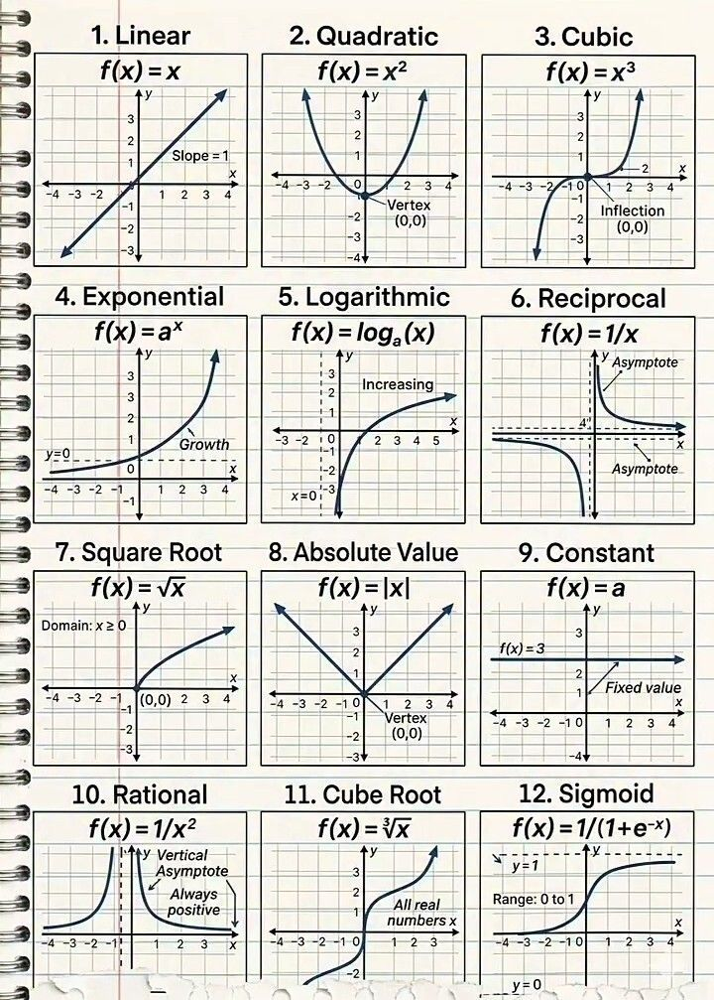

Sebuah refleksi tentang angka, manusia, dan batas-batasnya.
Kabut tipis dari arah Tangkuban Perahu perlahan turun, merayap melewati celah-celah pohon pinus yang mengelilingi Pusat Kajian Dinamika Sistem. Gedung berarsitektur kolonial berpadu dengan kaca-kaca modern itu berdiri angkuh di lereng Dago Atas, Bandung Utara. Hawa dingin bulan April menyusup melalui jendela yang sengaja dibiarkan terbuka sedikit, membawa aroma tanah basah dan daun pinus yang luruh. Di dalam salah satu ruang diskusi utama, udara justru terasa hangat, dipenuhi oleh aroma kopi Priangan yang baru diseduh dan ketegangan intelektual yang tertahan.
Empat orang peneliti duduk melingkari sebuah meja bundar besar berbahan kayu jati. Di hadapan mereka, sebuah layar proyeksi raksasa menampilkan sebuah gambar dari lembaran buku catatan spiral. Gambar itu berisi dua belas grafik fungsi matematis yang digambar dengan rapi. Dua belas jendela menuju realitas yang direduksi menjadi garis dan kurva pada bidang Kartesius.

Mereka adalah kelas menengah Bandung yang khas—intelektual, terdidik dengan sangat baik, dan memiliki privilese untuk memikirkan hal-hal abstrak sementara kota di bawah mereka sibuk dengan kemacetan dan urusan perut.
Bram, seorang sosiolog senior dengan rambut yang mulai memutih di pelipis, mengetukkan ujung pena ke atas meja. Di sebelahnya duduk Kinar, ahli demografi dan analisis data yang selalu mengenakan pashmina tebal. Di seberang mereka ada Dimas, seorang fisikawan teoretis yang sinis namun brilian, dan Saras, psikolog perilaku yang percaya bahwa tidak ada satu pun persamaan matematika yang bisa merangkum jiwa manusia tanpa menyisakan error term yang tak termaafkan.
"Dua belas fungsi dasar," gumam Bram, memecah kesunyian. Suaranya bariton, tenang. "Kalian sadar bahwa seluruh peradaban manusia yang rumit ini, dari jatuhnya sebuah imperium hingga tren inflasi di pasar saham Jakarta, bisa direpresentasikan oleh dua belas kotak di layar ini?"
Saras tersenyum tipis, menyesap kopinya. "Itu pandangan yang sangat reduksionis, Bram. Manusia itu bukan titik koordinat."
"Bukan titik, Saras, melainkan pergerakan. Pola." Kinar menimpali sambil memperbaiki posisi kacamatanya. Ia bangkit dan berjalan mendekati layar proyeksi. "Mari kita bedah ini. Jika kita sedang membicarakan rancangan kebijakan sosial untuk memetakan kelas menengah, kita harus mulai dari ilusi yang paling banyak dipercayai masyarakat."
Kinar menunjuk pada kotak pertama di sudut kiri atas.
"Ini adalah fungsi Linear, f(x) = x," ucap Kinar, suaranya menggema di ruangan yang kedap suara itu. "Secara definisi, ini adalah fungsi polinomial derajat satu yang membentuk sebuah garis lurus. Dalam grafik ini, garis tersebut memiliki kemiringan atau slope = 1, membelah kuadran pertama dan ketiga secara presisi."
"Dan apa contohnya dalam kehidupan?" tanya Saras, menantang.
"Mitos meritokrasi," sahut Dimas cepat, bahkan sebelum Kinar membuka mulut. "Masyarakat kita diajarkan sejak SD bahwa jika kau memasukkan effort sebesar x, kau akan mendapatkan hasil persis sebesar x. Kaum kapitalis sangat menyukai grafik ini. Kerja satu jam, dibayar satu jam. Sebuah hubungan kausalitas yang lurus, tanpa distorsi."
Bram tertawa pelan. "Namun kita tahu dunia tidak bekerja seperti itu, Dimas. Makanya ada grafik ke-sembilan di bawah sana." Bram mengarahkan laser pointer ke kotak di baris ketiga.
"Fungsi Constant, f(x) = a," Bram menjelaskan. "Sebuah fungsi di mana nilai output atau y selalu sama terlepas dari berapa pun nilai input x-nya. Grafiknya berupa garis horizontal sempurna dengan fixed value. Di gambar itu, garisnya ditarik pada f(x) = 3."
"Contoh yang sempurna untuk stagnasi kelas pekerja," tambah Saras dengan nada getir. "Berapa pun waktu yang kau habiskan di perusahaan, berapa pun tingkat inflasi naik, upah minimum yang didapatkan buruh pabrik di pinggiran Bandung akan tertahan pada sebuah nilai konstan yang mencekik. Garis itu tidak pernah naik. Ia hanya memanjang ke masa depan tanpa harapan."
Ruangan kembali hening sejenak. Angin Utara berhembus sedikit lebih kencang, membuat kaca jendela berderak pelan. Lampu kota Bandung mulai menyala satu per satu di kejauhan, terlihat seperti sekumpulan scatter plot yang menyala di dasar lembah.
"Jika fungsi linear dan konstan terlalu utopis atau terlalu pesimis, mari masuk ke ranah emosi manusia," Saras kini berdiri, mengambil alih panggung. Ia menunjuk dua grafik yang memiliki bentuk dasar melengkung dan patah di tengah layar.
"Psikologi perilaku tidak berjalan lurus," ujar Saras, matanya terpaku pada kotak nomor delapan. "Ini adalah fungsi Absolute Value atau Nilai Mutlak, f(x) = |x|. Definisi matematisnya adalah fungsi yang tidak pernah memberikan nilai negatif; ia selalu mengembalikan jarak riil dari sebuah angka ke titik nol. Grafiknya berbentuk persis seperti huruf V yang simetris, dengan titik puncak atau vertex bersandar di titik asal (0,0)."
"Apa terjemahan sastranya, Saras?" Kinar bertanya lembut, mulai terhanyut.
"Rasa bersalah," jawab Saras pelan. "Atau trauma. Tidak peduli kau menyimpang ke arah negatif masa lalu, atau memproyeksikan kecemasan ke arah positif masa depan... jarak rasa sakitnya dari titik ekuilibrium hatimu tetap sama. Ia absolut. Ia selalu bernilai positif dalam memberikan beban pada pikiranmu. Bentuk V itu adalah bentuk patahan yang paling tajam dari kesadaran manusia."
Dimas, sang fisikawan, mengangguk setuju. Ia yang biasanya dingin tampak tertarik. "Tapi rasa sakit tidak selalu bergerak dalam garis lurus yang mematah. Terkadang, ia berakselerasi. Itu membawa kita ke kotak nomor dua."
Dimas bangkit dan menunjuk fungsi Quadratic, f(x) = x2. "Fungsi kuadrat. Sebuah polinomial derajat dua yang membentuk kurva parabola sempurna berbentuk huruf U, dengan vertex di (0,0) pada sumbu koordinat."
"Contohnya percepatan gravitasi," kata Dimas. "Atau dalam ranahmu, Saras, ini adalah bagaimana histeria massa bekerja. Saat ada sebuah sentimen negatif di media sosial, kerusakannya tidak bertambah satu per satu. Ia dikuadratkan. Kelengkungan ini menunjukkan percepatan rasa benci atau cinta. Semakin jauh kau dari titik nol, semakin drastis peningkatannya hingga tak terkendali ke atas."
"Tapi peradaban tidak sekadar naik ke atas lalu hilang," bantah Bram, mengusap dagunya yang kasar. "Sejarah memiliki koreksi. Ia meliuk. Lihat kotak nomor tiga dan sebelas."
Bram berjalan mendekati layar, tubuhnya yang tinggi menutupi sebagian cahaya proyektor. "Fungsi Cubic, f(x) = x3. Secara definisi, ini adalah fungsi berderajat tiga yang memotong titik asal. Ciri utamanya adalah ia memiliki inflection atau titik belok di koordinat (0,0). Ia datang dari kedalaman nilai negatif, melambat sejenak saat mendekati nol, lalu seketika berbalik arah melengkung tajam ke atas menuju nilai positif tak terhingga."
"Contohnya?" Dimas memancing.
"Revolusi," jawab Bram mantap. "Titik belok di (0,0) itu adalah momen 1998 di negeri ini, atau Revolusi Prancis. Kondisi sosial tertekan dari bawah, mendekati ekuilibrium dengan lambat dan penuh ketegangan. Lalu boom, titik belok terjadi. Paradigma bergeser seketika dan sejarah melesat ke arah yang sama sekali baru."
"Lalu bagaimana dengan bayangannya?" Kinar menunjuk ke fungsi Cube Root, f(x) = 3√x, di baris terbawah. "Definisinya adalah inversi dari fungsi kubik. Grafiknya seperti kurva S yang tertidur perlahan membelah sumbu, dan mencakup all real numbers x atau semua rentang bilangan real, baik negatif maupun positif."
Kinar menatap rekan-rekannya bergantian. "Ini adalah proses penyembuhan dari revolusi itu sendiri. Contohnya rekonsiliasi pasca-konflik. Awalnya, perubahan terjadi sangat cepat di sekitar titik nol, namun seiring berjalannya waktu dan meluasnya skala, kurvanya melandai. Perubahan menjadi sangat lambat, panjang, dan melelahkan. Ia menyentuh setiap elemen masyarakat, tapi momentumnya memudar. Begitulah negara kita saat ini, bergerak melandai di ujung kanan kurva akar pangkat tiga."
Malam semakin larut. Suhu udara di Dago Atas turun hingga menyentuh 18 derajat Celsius. Asap tipis mengepul dari cangkir-cangkir kopi yang isinya tinggal separuh. Diskusi mereka kini bukan lagi sekadar membedah data untuk laporan kajian ilmiah, melainkan menjelma menjadi semacam kontemplasi eksistensial.
"Kita belum membahas yang paling menakutkan dari semua grafik ini," ujar Kinar. Ia menekan tombol pada remot proyektor untuk memperbesar bagian tengah layar.
"Fungsi Exponential, f(x) = ax," ucap Kinar, nada suaranya berubah menjadi lebih analitis namun terselip kekhawatiran. "Fungsi eksponensial terjadi ketika variabel berada di posisi pangkat. Karakteristik utamanya adalah growth atau pertumbuhan yang melesat eksponensial ke atas. Ia memiliki garis asimtot horizontal pada sumbu y=0, artinya kurva ini merayap sedekat mungkin ke garis nol di sisi negatif, tapi tak akan pernah menyentuhnya sebelum meledak ke atas di sisi positif."
"Pandemi," Saras berbisik, teringat akan tahun-tahun kelam yang lalu.
"Tepat," Kinar mengangguk. "Itu contoh paling nyata. Atau populasi manusia terhadap ketersediaan pangan bumi. Eksponensial adalah manifestasi dari keserakahan alam semesta. Awalnya terlihat tenang, landai, tak mengancam. Namun ketika ia melewati sumbu vertikal, pertumbuhannya mematahkan semua batasan."
"Dan lawannya adalah penderitaan yang memanjang," timpal Dimas, menunjuk kotak di sebelahnya. "Fungsi Logarithmic, f(x) = loga(x). Definisi dari fungsi logaritma adalah kurva yang selalu increasing atau meningkat seiring berjalannya x, namun laju peningkatannya semakin lama semakin menyusut mendekati datar. Ia memiliki asimtot vertikal pada x=0."
Dimas menyalakan sebatang rokok kretek, meniupkan asapnya ke arah ventilasi. "Contoh logaritma adalah ilusi kesejahteraan manusia modern. Pada awalnya, lonjakan dari kemiskinan menuju kebebasan finansial terasa sangat cepat dan signifikan. Tapi setelah kau mencapai titik tertentu, kau butuh harta benda yang jumlahnya berlipat-lipat ganda hanya untuk mendapatkan kepuasan mental yang bertambah sedikit saja. Semakin ke kanan, kurva kebahagiaan itu melandai. Kau tak pernah benar-benar puas."
Saras membenarkan syalnya. Kedinginan mulai menembus kain pakaiannya. "Itu karena hidup manusia memang memiliki domain atau wilayah kekuasaan yang terbatas, Dimas. Kita tidak mahakuasa."
Saras lalu menunjuk ke arah kiri bawah, pada fungsi Square Root, f(x) = √x. "Ini adalah buktinya. Fungsi akar kuadrat. Definisi matematisnya sangat ketat: Domain: x ≥ 0. Wilayah asalnya haruslah lebih besar atau sama dengan nol. Kurvanya berawal dari titik asal (0,0) dan melengkung naik dengan hati-hati secara perlahan ke arah kuadran pertama."
"Kenapa domain-nya terbatas?" tanya Kinar.
"Karena kita tidak bisa menghitung akar dari masa lalu yang fiktif atau negatif dalam bilangan real," jawab Saras puitis. "Contohnya adalah penuaan secara biologis. Waktu tidak bisa bergerak mundur. Perjalanan manusia bermula dari titik lahir di (0,0). Kita hanya bisa maju ke depan dalam domain waktu yang positif, dan seiring bertambahnya usia, laju kebahagiaan biologis kita melengkung pelan, terengah-engah melawan gravitasi waktu."
"Jika kita membahas soal batasan waktu," suara Dimas memotong, mendadak bergetar dengan semacam antusiasme gelap yang khas dari seorang pemikir teori kuantum, "mari kita bicarakan ketidakterhinggaan yang membuat ilmuwan gila."
Ia melangkah maju, tangannya menyapu dua grafik sekaligus: kotak nomor 6 dan kotak nomor 10.
"Di sinilah letak ironi terbesar dari realitas kita," ucap Dimas. "Fungsi Reciprocal, f(x) = 1/x. Secara definisi, ini adalah fungsi kebalikan yang memotong ruang menjadi dua garis hiperbola yang terasing di kuadran pertama dan ketiga. Ia dikurung oleh dua buah garis asimtot (Asymptote), baik horizontal maupun vertikal."
Dimas menatap Kinar lekat-lekat. "Contohnya, Kinar, adalah kerinduan atau teori kelangkaan ekonomi. Semakin jarak antara dua orang, atau ketersediaan barang, mendekati titik nol, harga atau intensitas kerinduannya meroket menuju batas tak terhingga di atas sana. Namun, saat x tepat berada di angka nol—saat kalian benar-benar bersentuhan—fungsinya undefined. Tidak terdefinisi. Alam semesta melarangnya."
"Sangat tragis," sahut Bram. "Dua garis hiperbola yang selamanya terpisahkan oleh sumbu koordinat."
"Dan jika kau menginginkan tragedi yang lebih murni, lihat ini," Dimas menunjuk fungsi Rational, f(x) = 1/x2. "Definisinya adalah fungsi rasional dengan pembagi kuadrat. Karakter utamanya adalah grafiknya always positive (selalu positif) dan memiliki garis asimtot vertikal yang membelahnya di tengah. Kedua lengkungan dari kiri dan kanan sumbu y merambat naik ke arah yang sama menuju infiniti."
"Apa terjemahannya dalam hidup kita, Dimas?" Saras bertanya, matanya menyiratkan kesedihan yang samar.
"Pengorbanan," jawab Dimas pelan. "Atau gravitasi cinta antar dua manusia sejati. Berbeda dengan reciprocal yang terpecah antara kutub positif dan negatif, fungsi ini always positive. Tidak peduli dari masa lalu (kiri) atau masa depan (kanan) kau datang, ketika kau mendekati objek di titik pusat, intensitas dan usahamu mengarah ke satu tujuan kebaikan tertinggi. Mereka berdua memanjat tebing keabadian bersama-sama, mendaki asimtot vertikal menuju Tuhan, meski mereka sadar mereka tidak akan pernah menyentuh poros ketuhanan itu sendiri."
Kinar, yang dari tadi diam meresapi kata-kata Dimas, akhirnya menarik napas panjang. Ia mengambil pointer dari tangan Bram dan mengarahkannya ke kotak terakhir di sudut kanan bawah.
"Setelah kita melewati garis lurus yang naif, parabola rasa sakit, eksponensial bencana, dan asimtot yang tak pernah bersentuhan... kita tiba di sini," ujar Kinar lembut namun tegas.
"Fungsi Sigmoid, f(x) = 1/(1+e-x). Sebuah maha karya keseimbangan alam." Kinar menyebutkan definisinya dengan fasih. "Fungsi logistik yang membentuk kurva elegan menyerupai huruf S halus. Kurva ini dibatasi oleh sebuah rentang atau Range: 0 to 1. Ia memiliki batas bawah di y=0 dan asimtot batas atas di garis putus-putus pada y=1."
Bram mengangguk mengerti. "Daya dukung lingkungan hidup, bukan?"
"Benar, Bram," Kinar menoleh. "Ini adalah model matematika paling akurat untuk menggambarkan nasib kita semua sebagai manusia dan masyarakat. Di awal, grafik datang dari bawah nol—ketidaktahuan, ketiadaan. Lalu perlahan kita belajar, bertumbuh. Di tengah grafik, lihatlah, ada lonjakan eksponensial. Ini adalah masa muda kita, masa keemasan ekonomi, atau revolusi teknologi. Kita merasa bisa menguasai dunia."
Saras menyilangkan kaki, mendengarkan dengan saksama.
"Tetapi," Kinar melanjutkan, "alam semesta memiliki range, batasan mutlak. Langit-langit kaca. Saat garis ini mendekati angka 1, lajunya mulai melambat, menunduk dengan penuh kerendahan hati. Batas atas di y=1 adalah kapasitas maksimum bumi, atau kapasitas maksimum pemahaman otak manusia. Kita akan terus berkembang, terus menjadi lebih baik, mendekati kesempurnaan di angka 1. Tapi kita tidak akan pernah melampauinya."
"Sebuah pembatas yang mencegah kita menghancurkan diri kita sendiri," gumam Saras. "Atau mencegah kita mengira diri kita adalah dewa."
"Tepat sekali, Saras," Kinar tersenyum. "Fungsi Sigmoid adalah kisah kedewasaan peradaban. Menerima bahwa pertumbuhan ada batasnya, dan di batas atas itulah kita menemukan stabilitas, bukan kepunahan."
Jam dinding di sudut ruang diskusi berdetak menunjuk pukul sebelas malam. Keempat intelektual itu berdiri mematung memandangi papan layar, menyadari bahwa apa yang bermula dari tugas menyusun model demografi sosial telah berubah menjadi cermin raksasa yang merefleksikan jiwa mereka sendiri.
Dua belas fungsi matematis itu bukanlah sekadar coretan tinta hitam pada lembaran buku bergaris. Mereka adalah cetak biru tentang bagaimana manusia jatuh, bangkit, berputar, mematahkan hati, menghadapi batas-batas logisnya, dan pada akhirnya, mendewasa di antara garis-garis asimtot waktu.
Bram melangkah ke arah jendela, membuka kacanya lebih lebar. Udara basah dan dingin dari lereng Gunung Tangkuban Perahu menerpa wajah keriputnya. Ia melihat jutaan lampu Kota Bandung berkelap-kelip statis. Di suatu tempat di sana, fungsi linear sedang dijalani oleh buruh malam; fungsi eksponensial sedang menjalar di ranjang rumah sakit; dan fungsi absolut sedang menancap di hati seseorang yang kehilangan orang yang dicintainya.
"Sudah malam," kata Bram, suaranya parau namun penuh kelegaan. "Saya rasa kita sudah menemukan model untuk kajian ilmiah kita. Semua variabel perilaku masyarakat kelas menengah kota ini sudah tercakup di sini."
Dimas mematikan proyektor, membuat ruangan menjadi temaram, hanya diterangi cahaya dari jendela dan lampu sudut. "Ya. Matriks kehidupannya sudah lengkap."
Kinar dan Saras membereskan dokumen-dokumen mereka, menyusun lembar demi lembar yang penuh dengan coretan kalkulus menjadi tumpukan rapi. Dalam keheningan malam Dago Pakar, mereka menyadari satu hal yang tak terbantahkan: matematika tidak pernah benar-benar membicarakan angka. Matematika selalu membicarakan tentang manusia dan takdirnya yang tak bisa lari dari garis-garis tak kasat mata di alam semesta.